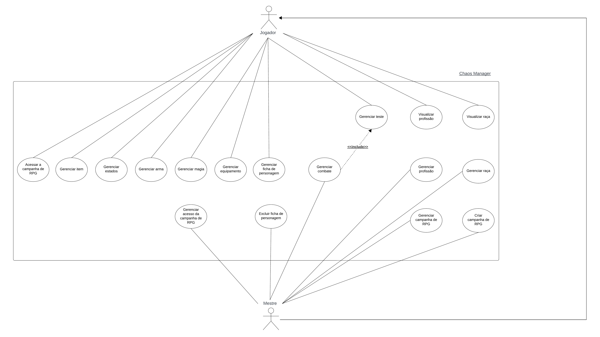

Backlog Casos de Uso
Introdução
O Processo Unificado utiliza casos de uso como forma de declaração e especificação de requisitos. Tendo isso em vista, antes de especificar os casos de uso, foi necessário elicitar os requisitos a serem declarados. Para isso, foram realizadas previamente as atividades de Elicitação e Descoberta, Análise e Consenso, Verificação e Validação da Engenharia de Requisitos. Esse processo pode ser observado na Figura 1 e os requisitos finais elicitados e passados pela verificação e validação na Tabela 1.
Figura 1: Elicitação dos Requisitos.
| Requisitos Elicitados |
|---|
| Criar raça |
| Visualizar raça |
| Editar raça |
| Excluir raça |
| Criar profissão |
| Visualizar profissão |
| Editar profissão |
| Excluir profissão |
| Criar ficha de personagem |
| Visualizar ficha de personagem |
| Editar ficha de personagem |
| Excluir ficha de personagem |
| Atribuir estados |
| Retirar estado |
| Adicionar magia |
| Retirar magia |
| Adicionar arma |
| Retirar arma |
| Adicionar equipamento |
| Retirar equipamento |
| Administrar item |
| Retirar item |
| Realizar teste |
| Visualizar resultado do teste |
| Ordenar iniciativa de combate |
| Realizar efeito do combate |
| Visualizar efeito do combate |
| Visualizar mapa |
| Importar mapa |
| Editar mapa |
| Criar campanha de RPG |
| Visualizar campanha de RPG |
| Editar campanha de RPG |
| Excluir campanha de RPG |
| Acessar campanha de RPG |
Tabela 1: Requisitos Elicitados.
Para um melhor entendimento do que seriam alguns dos requisitos citados, a Figura 2 representa a Ficha do Personagem onde é o item que mantém todas as informações de um personagem durante a campanha.

Figura 2: Ficha do personagem.
Casos de Uso
Atores
Foram identificados 2 atores dos fluxos de eventos do nosso sistema, são eles:
- Mestre: refere-se ao jogador de uma campanha de RPG que deseja mestrar uma campanha no ChaosManager.
- Jogador: refere-se ao jogador de uma campanha de RPG que deseja participar de um campanha mestrada pela persona mestre
Casos de Uso Identificados
Com base nos requisitos elicitados, foram identificados 15 casos de uso, como apresentado na Tabela 2.
| ID | Nome do Caso de Uso | Descrição | Requisitos Envolvidos |
|---|---|---|---|
| CdU-01 | Criar Campanha de RPG | Este caso de uso permite o mestre criar uma sala de campanha onde possa administrar todas as suas sessões. Ele deve poder informar o nome, história e senha para a campanha ser criada. | Criar campanha de RPG Visualizar campanha de RPG Editar campanha de RPG Excluir campanha de RPG |
| CdU-02 | Gerenciar acesso da campanha de RPG | Este caso de uso permite os mestre e os jogadores acessarem uma sala de campanha onde possam ter acesso às ferramentas que os auxiliarão nas sessões. Eles devem poder acessar informando o nome da sala e sua senha de acesso. | Acessar campanha de RPG |
| CdU-03 | Gerenciar campanha de RPG | Esse caso de uso permite o mestre gerenciar sua sala de campanha como necessário, editando as informações que deseja ou até mesmo excluindo a campanha. | Visualizar campanha de RPG Editar campanha de RPG Excluir campanha de RPG |
| CdU-04 | Gerenciar ficha de personagem | Este caso de uso permite o mestre e os jogadores gerenciarem a ficha de personagem para que consigam administrar todas as informações do seu personagem durante a campanha, bem como criar a ficha e posteriormente editá-la. As fichas do mestre apenas ele poderá acessar, enquanto todos podem ver as dos outros jogadores. | Criar ficha de personagem Visualizar ficha de personagem Editar ficha de personagem |
| CdU-05 | Excluir ficha de personagem | Este caso de uso é utilizado pelo mestre para excluir uma ficha de personagem quando não mais necessária. | Excluir ficha de personagem |
| CdU-06 | Gerenciar teste | Este caso de uso protagoniza momentos em que os Jogadores e os personagens do Mestre precisam realizar ações que demandem alguma dificuldade, onde é possível realizar 10 testes diferentes. | Realizar teste Visualizar resultado do teste |
| CdU-07 | Gerenciar combate | Este caso de uso será utilizado pelo mestre para gerenciar o combate e pelo jogador para reagir as ações do mestre no combate. Para tanto, o mestre pode indicar quem participa do combate e em que ordem, indicar quem participa do turno atacando e sendo atacado e por fim executando o efeito desse combate. | Ordenar iniciativa de combate Realizar efeito do combate Visualizar efeito do combate |
| CdU-08 | Gerenciar estados | Este caso de uso é utilizado pelos jogadores e mestre para gerenciar os estados que utilizarão durante a campanha de RPG, bem como adicioná-las e retirá-las de suas fichas de personagem. | Atribuir estados Retirar estado |
| CdU-09 | Gerenciar magia | Este caso de uso é utilizado pelos jogadores e mestre para gerenciar as magias que utilizarão durante a campanha de RPG, bem como adicioná-las e retirá-las do sistema. | Adicionar magia Retirar magia |
| CdU-10 | Gerenciar arma | Este caso de uso é utilizado pelos jogadores e mestre para gerenciar as armas que utilizarão durante a campanha de RPG, bem como adicioná-las e retirá-las de suas fichas de personagem. | Adicionar arma Retirar arma |
| CdU-11 | Gerenciar equipamento | Este caso de uso é utilizado pelos jogadores e mestre para gerenciar os equipamentos que utilizarão durante a campanha de RPG, bem como adicioná-las e retirá-las de suas fichas de personagem. | Adicionar equipamento Retirar equipamento |
| CdU-12 | Gerenciar item | Este caso de uso é utilizado pelos jogadores e mestre para gerenciar os itens que utilizarão durante a campanha de RPG, bem como adicioná-las, alterar suas quantidades para acrescentá-las ou deduzí-las e retirá-los de suas fichas de personagem. | Administrar item Retirar item |
| CdU-13 | Gerenciar raça | Este caso de uso é utilizado pelos jogadores e mestre para gerenciar as raças que utilizarão durante a campanha de RPG, bem como adicioná-las, editá-las e removê-las do sistema. | Criar raça Editar raça Excluir raça |
| CdU-14 | Visualizar raça | Este caso de uso é utilizado pelos jogadores e mestre para visualizar as raças que existem durante a campanha de RPG, assim como as informações de cada uma delas. | Visualizar raça |
| CdU-15 | Gerenciar profissão | Este caso de uso é utilizado pelos jogadores e mestre para gerenciar as profissões que utilizarão durante a campanha de RPG, bem como adicioná-las, editá-las e removê-las do sistema. | Criar profissão Editar profissão Excluir profissão |
| CdU-16 | Visualizar profissão | Este caso de uso é utilizado pelos jogadores e mestre para visualizar as profissões que existem durante a campanha de RPG, assim como as informações de cada uma delas. | Visualizar profissão |
Tabela 2: Casos de Uso.
Com os atores e casos de usos identificados, foi criado o diagrama de casos de uso para visualizar como e por quem as ações são realizadas dentro do sistema, assim como a ligação entre casos quando existiam. O diagrama está disponível na Figura 3.

Figura 3: Diagrama de caso de uso.
Especificação dos Casos de Uso
CdU-01 - Criar Campanha de RPG
| Nome do caso de uso | Criar Campanha de RPG | ||||||||||||||
|---|---|---|---|---|---|---|---|---|---|---|---|---|---|---|---|
| Autor | Emerson Teles,Larissa Gomes, Oscar de Brito e Gustavo França | ||||||||||||||
| 1. Atores | Mestre | ||||||||||||||
| 2. Breve Descrição | Este caso de uso permite o mestre criar uma sala de campanha onde possa administrar todas as suas sessões. Ele deve poder informar o nome, história e senha para a campanha ser criada. | ||||||||||||||
| 3. Fluxo básico de eventos |
FB. 3.1. O mestre seleciona a opção “Criar nova sala de campanha de RPG”. 3.2. O mestre fornece um nome e história para a sala de campanha. 3.3. O mestre define uma senha de acesso à sala de campanha. 3.4. O mestre seleciona a opção de “Criar”. 3.5. O sistema faz a validação das informações. (FE01) (FE02) (RN01) 3.6. O sistema cria a sala de campanha. 3.7. O sistema gera um código de acesso para que os jogadores possam acessar a sala de campanha. (RN02) 3.8. O sistema informa ao mestre as instruções de acesso e o código de acesso dos jogadores.(RN03) |
||||||||||||||
| 4. Fluxo Alternativos | Não há | ||||||||||||||
| 5. Fluxos de exceção |
FE01 – Senha inválida No passo 3.5 do FB, caso a senha digitada seja menor que 5 dígitos, o sistema deve emitir a mensagem: “Senha inválida, defina uma senha com pelo menos 5 dígitos!”. E, o caso de uso retorna ao 3.3 do FB. FE02 –Campanha já existe No passo 3.5 do FB, caso o nome da campanha informado já exista, o sistema deve emitir a mensagem: “Nome de campanha já existe, informe um novo!”. E, o caso de uso retorna ao 3.2 do FB. |
||||||||||||||
| 6. Pré-condições | Não há | ||||||||||||||
| 7. Pós-condições | 7.1. Sala de campanha criada. | ||||||||||||||
| 8. Pontos de extensão | Não há | ||||||||||||||
| 9. Requisitos especiais | Não há | ||||||||||||||
| 10. Regras de negócio |
(RN01) - Validação de informações
(RN02) - O código de acesso dos jogadores deve ter 6 dígitos, sendo gerado entre 100.000 e 999.999 (RN03) - As instruções de acesso devem conter o nome da campanha, a senha de acesso do mestre e o código de acesso dos jogadores
|
Tabela 3: Especificação Caso de Uso 01.
CdU-02 - Gerenciar acesso da campanha de RPG
| Nome do caso de uso | Gerenciar acesso da campanha de RPG | |||||||||||
|---|---|---|---|---|---|---|---|---|---|---|---|---|
| Autor | Emerson Teles,Larissa Gomes,Oscar de Brito e Gustavo França | |||||||||||
| 1. Atores | Mestre e jogador possuem essa mesma funcionalidade, nos fluxos serão referidos como usuário. | |||||||||||
| 2. Breve Descrição | Este caso de uso permite o mestre e os jogadores acessarem uma sala de campanha onde possam ter acesso às ferramentas que os auxiliarão nas sessões. Eles devem poder acessar informando o nome da sala e sua senha de acesso. | |||||||||||
| 3. Fluxo básico de eventos |
FB. 3.1. O usuário seleciona a opção “Acessar sala de campanha de RPG”. 3.2. O usuário fornece o nome e a senha de acesso. 3.3. O usuário seleciona a opção “Acessar”. 3.4. O sistema valida as informações. (FE01) (FE02) (RN01) 3.5. O sistema informa que a autenticação foi realizada com sucesso. |
|||||||||||
| 4. Fluxo Alternativos | Não há | |||||||||||
| 5. Fluxos de exceção |
FE01 – Campanha inexistente No passo 3.4 do FB, caso o nome de campanha digitado não corresponda a nenhuma campanha existente, o sistema deve emitir a mensagem: “Campanha não existe ou nome de campanha incorreto!”. E, o caso de uso retorna ao 3.2 do FB. FE02 – Senha inválida No passo 3.4 do FB, caso a senha digitada não corresponda a nenhuma senha de usuário (Jogador e Mestre) da campanha, o sistema deve emitir a mensagem: “Senha inválida, digite novamente!”. E, o caso de uso retorna ao 3.2 do FB. |
|||||||||||
| 6. Pré-condições | 6.1. Sala de campanha criada. | |||||||||||
| 7. Pós-condições | 7.1. Usuários acessam a sala de campanha de RPG | |||||||||||
| 8. Pontos de extensão | Não há | |||||||||||
| 9. Requisitos especiais | Não há | |||||||||||
| 10. Regras de negócio |
(RN01) - Validação de informações
|
Tabela 4: Especificação Caso de Uso 02.
CdU-03 - Gerenciar campanha de RPG
| Nome do caso de uso | Gerenciar campanha de RPG | |||||||||||
|---|---|---|---|---|---|---|---|---|---|---|---|---|
| Autor | Larissa Gomes,Oscar de Brito e Gustavo França | |||||||||||
| 1. Atores | Mestre | |||||||||||
| 2. Breve Descrição | Esse caso de uso permite o mestre gerenciar sua sala de campanha como necessário, editando as informações que deseja ou até mesmo excluindo a campanha. | |||||||||||
| 3. Fluxo básico de eventos |
FB. 3.1. O mestre seleciona a opção “Configurações”. 3.2. O sistema apresenta as informações da campanha:
3.3. O sistema apresenta as seguintes opções:
3.4. O mestre seleciona a opção “Editar”. 3.5. O mestre altera as informações que deseja das apresentadas:
3.6. O mestre seleciona a opção de “Confirmar”. 3.7. O sistema faz a validação das informações. (FE01) (FE02) (RN01) 3.8. O sistema atualiza as informações da campanha. |
|||||||||||
| 4. Fluxo Alternativos |
4.1. FA01 – Excluir Campanha 4.1.1. O mestre seleciona a opção “Excluir campanha”. 4.1.2. O sistema confirma se o mestre deseja realizar essa ação. 4.1.3. O mestre seleciona a opção de “Confirmar”. 4.1.4. O sistema exclui a campanha. |
|||||||||||
| 5. Fluxos de exceção |
FE01 – Senha inválida No passo 3.7 do FB, caso a senha digitada seja menor que 5 dígitos, o sistema deve emitir a mensagem: “Senha inválida, defina uma senha com pelo menos 5 dígitos”. E, o caso de uso retorna ao 3.5 do FB. FE02 –Campanha já existe No passo 3.7 do FB, caso o nome da campanha informado já exista, o sistema deve emitir a mensagem: “Nome de campanha já existe, informe um novo”. E, o caso de uso retorna ao 3.5 do FB. |
|||||||||||
| 6. Pré-condições |
6.1. Sala de campanha criada. |
|||||||||||
| 7. Pós-condições |
7.1. Informações atualizadas da campanha 7.2. Campanha excluída (fluxo alternativo) |
|||||||||||
| 8. Pontos de extensão | Não há | |||||||||||
| 9. Requisitos especiais | Não há | |||||||||||
| 10. Regras de negócio | (RN01) - Validação de informações
|